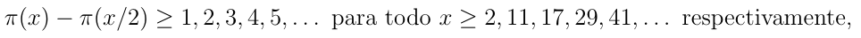

Um misterioso matemático, nascido em 1887 em Erode, na Índia, criou teoremas surpreendentes. Sem formação acadêmica, realizou contribuições substanciais nas áreas da análise matemática, teoria dos números, séries infinitas, frações continuadas, ... Esse documento conta um pouco de sua história.
Srinivasa Aiyangar Ramanujan (Erode, 22 de dezembro de 1887 – Kumbakonam, 26 de abril de 1920), foi um matemático indiano. Seus estudos nunca foram efetivamente publicados. O que existe da sua obra são essencialmente fórmulas e expressões matemáticas isoladas e rascunhos manuscritos.
Ramanujan era um matemático com um modo de trabalhar especial. Embora não tivesse o conceito de demonstração enraizado, a verdade é que possuía uma intuição admirável. São muitas as contribuições do matemático, sendo ele considerado um gênio marcante para os estudos das ciências exatas.
Ao procurar por matemáticos que pudessem entender seu trabalho, em 1913 ele começou a trocar cartas com G. H. Hardy da Universidade de Cambridge, Inglaterra. Eventualmente Hardy trouxe Ramanujan para o Trinity College de Cambridge, onde os dois deram início a uma frutuosa relação de trabalho.
Com saúde muito frágil por vários anos, ele morreu em 1920, em Kumbakonam, na Índia. Sua história é relatada no filme intitulado The Man Who Knew Infinity ("O homem que viu o infinito"), de 2015, que por sua vez é baseado em um livro de 1991, de mesmo nome.
O restante desse documento está dividido da seguinte forma. Na Seção 2 apresentamos alguns dos eventos mais importantes sobre a vida de Ramanujan. Na Seção 3 apresentamos alguns dos resultados obtidos pelo matemático. Na Seção 4 mostramos como a história do Ramanujan já foi inserida na cultura popular. Por fim, na Seção 5 indicamos algumas de suas publicações.
Sobre G. H. Hardy: Godfrey Harold Hardy foi um matemático inglês, conhecido por seu trabalho em teoria dos números e análise matemática.
Sobre o filme: Esse filme teve orçamento de $10 milhões.
Srinivasa Ramanujan tem uma história de vida bastante interessante e cheia de detalhes. A seguir tentamos resumir os eventos mais importantes:
| 1887 | Nasceu em Erode, Tamil Nadu, India, em 22 de dezembro
|
|
| 1906 | Entrou na Universidade Pachaiyappa, em Madras, mas saiu sem completar os estudos | |
| 1911 | Publicou primeiro artigo sobre os Números de Bernoulli | |
| 1913 | Escreve primeira carta a G. H. Hardy | |
| 1914 | E. H. Neville conhece Ramanujan em Madras e o convence a ir para Cambridge | |
| 1916 | Consegue grau de bacharel na Universidade de Cambridge | |
| 1917 | É constantemente hospitalizado para tratamentos | |
| 1918 | Se torna Fellow of the Royal Society | |
| 1919 | Eleito para bolsa de estudos no Trinity College em Cambridge | |
| 1920 | De volta à Índia, com piora na saúde, morre em 26 de abril de 1920 |
Veja na Figura 1 uma foto de Ramanujan.
Não existem muitas fotos dele, essa é a mais clássica.
Ramanujan é bastante conhecido por resultados como
Em 1919, Ramanujan publicou uma nova prova para o postulado de Bertrand e, ao fim da prova, derivou um resultado mais geral, que é

onde π(x) é o número de primos menores ou iguais a x.
O inverso desse resultado é a definição de primos de Ramanujan. O n-ésimo primo de Ramanujan é o menor inteiro Rn para o qual π(x) - π(x/2) ≥ n, para todo Rn ≤ x.
O número 1729 ficou conhecido como número de Hardy-Ramanujan após uma visita que Hardy fez a Ramanujan no hospital:
-Hardy, qual o número do taxi que você veio?
-Um número sem importância, sem relevância, era o 1729.
-Não Hardy, esse é um belo número. Ele é o menor inteiro formado pela soma de dois outros inteiros elevados ao cubo!
As duas formas são 1729 = 103 + 93 = 13 + 123.
Generalizações dessa ideia criaram a noção de números taxicab.
Uma matriz quadrada de inteiros é um quadrado mágico se a soma dos elementos de cada linha, a soma dos elementos de cada coluna, a soma dos elementos da diagonal principal e da diagonal secundária são todos iguais.
| 22 | 12 | 18 | 87 |
| 88 | 17 | 9 | 25 |
| 10 | 24 | 89 | 16 |
| 19 | 86 | 23 | 11 |
O quadrado acima é mágico e a soma das linhas é sempre 139. A soma das colunas também, e das diagonais. Mas o mais interessante é a primeira linha. Os números 22, 12, 18 e 87 são a data de nascimento de Ramanujan!
A Tabela 1 apresenta algumas informações sobre aparições da história de Ramanujan na cultura popular [1].
| Ano | O que? | Detalhes |
|---|---|---|
| 1988 | documentário The Man Who Loved Numbers | Série NOVA da PBS |
| 1991 | livro The Man Who Knew Infinity: A Life of the Genius Ramanujan | biografia escrita por Robert Kanigel |
| 2006 | peça First class man | centrada na relação entre Ramanujan e Hardy |
| 2015 | filme The Man Who Knew Infinity | Dev Patel interpretou Ramanujan |
Um dos artigos em conjunto de Ramanujan e Hardy foi publicado em 1917 [2].
Ramanujan publicou 37 artigos que, após sua morte, foram reunidos em um livro [3].
| [1] | Srinivasa Ramanujan. https://en.wikipedia.org/wiki/Srinivasa_Ramanujan. | |
| [2] | S. R. Aiyangar, G. H. Hardy, P. V. S. Aiyar, and B. M. Wilson. Collected Papers of Srinivasa Ramanujan. AMS Chelsea Publishing Series. AMS Chelsea Pub., 2000. ISBN 9780821820766. | |
| [3] | G. H. Hardy and S. Ramanujan. Asymptotic formulae in combinatory analysis. Proceedings of the London Mathematical Society, s2-17(1):75–115, 1917. doi: 10.1112/plms/s2-17.1.75. |